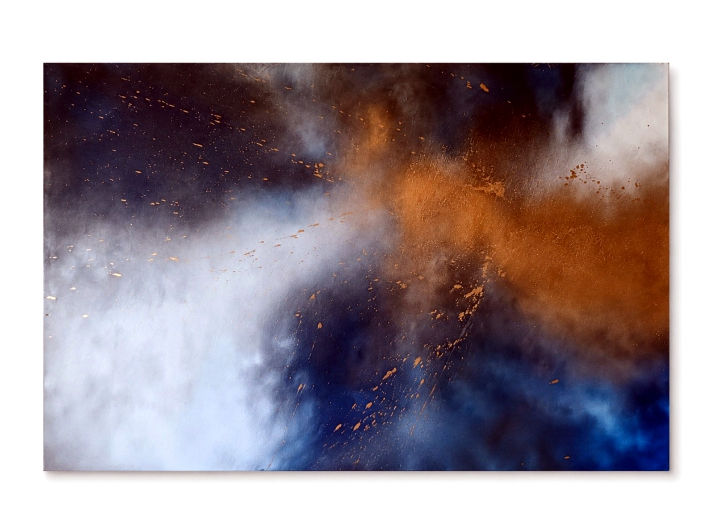

Sette lavori recenti in cui materia, volto, cura e responsabilità diventano immagini da osservare con calma.

Il lavoro
Le opere raccolte in questa sezione mostrano una parte più libera e materica della ricerca visiva di Francesca. Sono immagini nate da tecniche miste, sovrapposizioni, texture, contrasti di luce e simboli ricorrenti.
Non sono separate dal visual design: ne rappresentano la parte più intuitiva. La stessa attenzione a composizione, ritmo, gerarchia e atmosfera entra nei lavori artistici, ma con un linguaggio più personale e aperto all'interpretazione.
Sette opere recenti caricate come sezione dedicata.
Testi brevi per accompagnare ogni immagine senza chiuderne il significato.
Focus su materia, identità, cura, responsabilità e sguardo.
Immagini ottimizzate con alt text descrittivi e caricamento progressivo.
La sezione funziona come archivio visivo aggiornabile: uno spazio dove far emergere il lato artistico accanto ai progetti di comunicazione, brand ed eventi.
Una selezione di lavori recenti con titoli e descrizioni pensati per accompagnare l'osservazione.
Tra cielo e materiaTecnica mista dai toni blu, argento e oro. L'opera lavora sul contrasto tra profondità, luce e materia, lasciando allo sguardo la libertà di riconoscere paesaggi, nuvole o semplici movimenti interiori.
Oro nel desertoUna composizione essenziale costruita con nero, oro e terre. La luna domina il paesaggio e accompagna tre figure sospese in uno spazio silenzioso, tra viaggio, attesa e memoria.
SvelarsiUna figura femminile solleva un velo davanti agli occhi. Il gesto non racconta soltanto una liberazione, ma il momento esatto in cui si sceglie di guardarsi e mostrarsi senza nascondersi.
Ogni secondo contaUn'opera dedicata al soccorso e alla responsabilità. La scena della rianimazione mette al centro il gesto concreto di chi interviene, mentre intorno la città continua a muoversi.
La cura germogliaMani, cerotti, rose e piccoli germogli diventano simboli di fragilità e ripartenza. La cura non cancella le ferite: le attraversa e permette loro di trasformarsi.
Oltre lo sguardoUn volto spezzato lascia emergere un solo occhio. L'opera invita a guardare oltre ciò che appare intero e a riconoscere le parti nascoste dell'identità.
Di fronte a séUna figura osserva il proprio riflesso senza cercare una posa perfetta. Il quadro racconta il confronto silenzioso con se stessi, tra stanchezza, giudizio e consapevolezza.